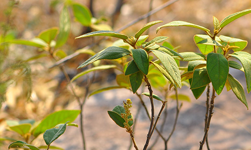

นายนันทศักดิ์ ได้กล่าวว่า
ตามปกติแต่ละจังหวัดจะมีการจดทะเบียนรายชื่อสมุนไพรที่มีอยู่ในจังหวัดนั้นๆ แบ่งออกเป็น 3 ประเภท คือ 1. สมุนไพรเพื่อการศึกษา 2. สมุนไพรพืชเศรษฐกิจ และ 3. สมุนไพรเสี่ยงอาจสูญพันธุ์ โดยจะมีคณะผู้เชี่ยวชาญเข้ามาจัดทำข้อมูลของสมุนไพรทั้ง 3 ประเภท จากนั้นได้เลือกออกมาเป็น 22 ชนิด ที่เสี่ยงอาจจะสูญพันธุ์ เนื่องจากเป็นสมุนไพรที่เติบโตช้า เมื่อจะใช้ต้องใช้ทั้งต้น บางชนิดใช้ทั้งราก และต้องใช้บ่อยจึงจะสามารถรักษาอาการได้
คณะกรรมการคุ้มครองและส่งเสริมภูมิปัญญาการแพทย์แผนไทยได้ประชุมหารือกัน โดยเลือกสมุนไพร 6 ชนิดจาก 22 ชนิดขึ้นมา คือ ถั่วดินโคก หรือ พิษนาศน์ เทพทาโร มะตูมนิ่ม มะหาด เร่ว และ หัวร้อยรู นอกจากนี้ ยังเสนอสมุนไพร “กระวาน” ขึ้นมาเป็นพิเศษด้วยอีกชนิดหนึ่ง เพื่อประกาศคุ้มครองและเป็นสมุนไพรที่ต้องควบคุม โดยหากใครมีสมุนไพร 7 ตัวนี้อยู่ในครอบครองไม่ได้ถือว่ามีความผิด เพียงแต่ต้องแจ้งมาทาง สธ. ให้รับทราบว่ามีอยู่เท่าใด เพื่อที่จะจัดทำแผนส่งเสริมการปลูกต่อไป เช่น บริษัทใดมีสมุนไพร 7 นี้อยู่ ใช้ผลิตยาไปเท่าใด ต้องปลูกทดแทนเท่าใด เพื่อไม่ให้สูญพันธุ์ เป็นต้น
1 . ถั่วดินโคก
ชื่อสมุนไพร : พิษนาศน์ (Sophora exigua Craib)
ชื่ออื่นๆ : แผ่นดินเย็น , ถั่วดินโคก , นมราชสีห์
ลักษณะทางพฤษศาสตร์
จัดเป็นไม้พุ่มขนาดเล็ก สูงได้ 15-30 เซนติเมตร ลำต้นลักษณะสั้นประมาณ 5-8 เซนติเมตร ใบเป็นใบประกอบแบบขนนก ออกเรียงสลับ แนบกับพื้นดินมีใบย่อย 9-13 ใบ โดยจะเป็นรูปวงรี รูปไข่ หรือ รูปขอบขนานแกมวงรี ปลายใบรูปไข่กลับ กว้าง 1.5-3 เซนติเมตร ยาว 2-5 เซนติเมตร ผิวใบมีขนละเอียดสีขาวขึ้นปกคลุม ดอกเป็นแบบช่อกระจะ โดยจะออกที่ปลายยอด และมีดอกย่อยจำนวนมาก กลีบดอกคล้ายรูปดอกถั่ว เป็นสีม่วงเข้ม และมีก้านช่อดอกยาว ผลออกเป็นฝักรูปขอบขนาน มีขนละเอียดสีขาว ปกคลุมด้านในมีเมล็ดเดียว
สรรพคุณ
ช่วยขับน้ำ ช่วยขับพิษภายใน แก้คางทูม แก้ฟกบวมตามข้อ ตามกล้ามเนื้อ ช่วยลดไข้ในเด็ก ช่วยบำรุงน้ำนม แก้ฝี แก้พิษงู ช่วยบรรเทาอาการไข้ แก้ร้อนในกระหายน้ำ แก้พิษหัด พิษอีสุกอีใส (บรรเทาอาการไข้จากหัด และอีสุกอีใส) แก้อาเจียน แก้มะเร็งคุดทะราด แก้หัวใจให้พิการต่างๆ แก้ไข้สันนิบาต แก้ปวดมวนท้อง แก้ลิ้นกระด้างคางแข็ง
2 . เทพทาโร
ชื่อสมุนไพร : เทพทาโร (Cinnamomum porrectum (Roxb.) Kostern)
ชื่ออื่นๆ : ข่าต้น , จะไคต้น , จะไคหอม , จวง , จวงหอม , มะแดกกะมางิง , หวางจาง
ลักษณะทางพฤษศาสตร์
เทพทาโรเป็นไม้ยืนต้นขนาดกลางถึงใหญ่ที่สูงประมาณ 10-30 เมตร และไม่ผลัดใบหรือผลัดใบระยะสั้น มีเรือนยอดสีเขียวเข้มที่โปร่งแสงและมีพุ่มกลมทึบ ลำต้นเรียบและไม่มีพูพอน ใบเป็นใบเดี่ยวที่มีขนาดกว้างประมาณ 2.5-6 เซนติเมตร และยาวประมาณ 5-20 เซนติเมตร ดอกออกเป็นช่อกระจุกคล้ายร่ม และมีดอกย่อยประมาณ 13-14 ดอกใน 1 ช่อ ผลมีลักษณะเป็นพองเล็กเกลี้ยงทรงกลมหรือไข่กลับ มีกลิ่นหอม ก้านผลเรียวยาวประมาณ 3-5 เซนติเมตร ที่ขั้วมีกลีบเลี้ยงรูปถ้วย
สรรพคุณ
ใช้แก้ไข้หวัด ตัวร้อน อาการไอเรื้อรัง ออกหัดตัวร้อน โดยใช้เมล็ดเทพทาโร ประมาณ 5-6 กรัม นำมาบดให้เป็นผงชง กับน้ำรับประทาน ใช้เป็นยาขับลมชื้อในร่างกาย แก้ไขข้ออักเสบโดยใช้ราก แห้ง 10-18 กรัม มาดองกับเหล้ารับประทาน ใช้เป็นแก้บิด โดยใช้เมล็ดเทพทาโร ประมาณ 5-8 กรัม นำมาต้มกับใบยูตาลิปตัสประมาณ 6-8 กรัม รับประทาน ใช้แก้ปวดเมื่อยตามร่างกาย ปวดเส้นเอ็น ให้ใช้รากเทพทาโร 20 กรัม โกฐหัวบัว 20 กรัม เจตมูลเพลิง 15 กรัม โกฐสอ 10 กรัม และโกฐเชียง 15 กรัม นำมาแช่กับเหล้ารับประทาน ใช้แก้ลมป่วง โดยใช้เปลือกต้นมาต้มกับน้ำดื่ม ใช้แก้สะอึก แก้ไข้โดยใช้เปลือกต้นมาฝนกับเปลือกหอยขมผสมกับน้ำซาวข้าว แล้วนำมาดื่ม ใช้แก้ปวดท้องแก้แผลไฟไหม้ น้ำร้อนลวก แก้แมลงสัตว์กัดต่อย แก้ปวดเมื่อย โดยใช้น้ำมันหอมระเหยจากส่วนต่างๆ ของเทพทาโรมาถูนวดบริเวณที่เป็นแก้หูน้ำหนวกโดยใช้น้ำมันหอมระเหยชุบสำลีนวดหู
3 . มะตูมนิ่ม
ชื่อสมุนไพร : มะตูมนิ่ม (Commiphora myrrha)
ลักษณะทางพฤษศาสตร์
เป็นไม้ยืนต้นสูง 10-15 เมตร ใบเดี่ยว ออกเรียงสลับ รูปรี หรือรูปใบหอกปลายแหลม โคนมน ขอบหยัก ใบมีกลิ่นหอม ยอดอ่อนกินเป็นผักสดกับน้ำพริกได้ ในทางไสยศาสตร์ถือว่า ใบของมะตูมทุกชนิด ใช้ป้องกันเสนียดจัญไร ขับภูตผีปีศาจได้ ดอกเป็นสีขาวมีกลิ่นหอมแรงและหอมไกล ออกเป็นช่อตามซอกใบและปลายยอด “ผล” รูปกลมรีคล้ายไข่ ผลอ่อนสีเขียว เปลือกแข็ง เมื่อผลสุกเป็นสีเหลือง และเปลือกผลจะอ่อนและนิ่มใช้นิ้วกดจะบุ๋มทันที ไม่เหมือนเปลือกผลมะตูมทั่วไป จึงถูกเรียกว่า “มะตูมนิ่ม” เนื้อในเป็นสีเหลือง มีเมล็ดจำนวนมาก รสชาติหวานหอมปนฝาดเล็กน้อย ขยายพันธุ์ด้วยเมล็ดและตอนกิ่ง
สรรพคุณ
ผลสดสุกมีรสฝาดหวานกินเป็นยาอายุวัฒนะ บำรุงกำลัง ช่วยให้เจริญอาหาร ขับผายลมดีมาก โดยให้เอาผลสดสุก 1 ผล หรือ 2 ผล ต้มกับน้ำท่วมยาจนเดือดดื่มต่างน้ำ หรือจะดื่มแทนน้ำชาก็ได้ หรือนำไปดองเหล้าขาว 40 ดีกรี ก่อนจะดองเหล้าต้องทุบผลให้แตกอ้าผสมกับใบต้น “กำลัง 7 ช้างสาร” พอ ประมาณดื่มครั้งละ 1 แก้วก่อนอาหารเย็นและก่อนนอน จะช่วยบำรุงกำลังได้เด็ดขาดมาก รากแก้พิษฝี พิษไข้ แก้สติเผลอ รักษาน้ำดี ทางภาคเหนือใช้ทั้ง 5 รวมรากต้มน้ำดื่มแก้ปวดศีรษะได้
4 . มะหาด
ชื่อสมุนไพร : มะหาด (Artocarpus lakoocha Roxb)
ชื่ออื่นๆ : หาดขนุน ,ปวกหาด , หาด , ฮัด ,มะหาดใบใหญ่ , กายอ , ตาแป , ตาแปง , เซยาสู้
ลักษณะทางพฤษศาสตร์
มะหาดเป็นไม้ยืนต้นขนาดใหญ่ที่สูงประมาณ 15-25 เมตร และไม่ผลัดใบ มีทรงพุ่มกลมและลำต้นเป็นตรง โดยมีเปลือกสีน้ำตาลอมแดงถึงน้ำตาลเข้ม ใบเป็นใบเดี่ยวที่เรียงแบบสลับระนาบเดียว มีขนาดประมาณ 25-30 × 15-20 ซม. และมีสีเขียวเข้มเหนียวคล้ายหนัง ด้านบนมีขนหยาบเล็กน้อย ด้านล่างสีเขียวอมเทาและมีขนหยาบสีเหลืองเล็กน้อย ดอกมีลักษณะเป็นช่อกลมแน่นสีเหลืองหม่นถึงชมพูอ่อน มีดอกเพศผู้และเพศเมียต่างกันและอยู่ใกล้กัน ผลมีลักษณะเป็นตะปุ่มบิดเบี้ยว มีขนนุ่มบางคล้ายกำมะหยี่ สีนอกเป็นเหลืองอ่อนหรือส้ม และเมล็ดมีรูปขอบขนานหรือเกือบกลม สีน้ำตาลเทา มะหาดเป็นไม้ที่มีความสวยงามและมีค่าใช้สอยทั้งในด้านสวนป่าและการใช้ในวงการประดิษฐ์
สรรพคุณ
แก่นมะหาดมาต้มเคี่ยวด้วยน้ำไปนานจนเกิดฟองขึ้น แล้วช้อนฟองขึ้นมาตากแห้ง จะได้ผงสีเหลือง นำมาบดให้เป็นผงละเอียด ขนาดรับประทานครั้งละ 1-2 ช้อนชา (ประมาณ 3-5 กรัม) รับประทานกับน้ำสุกเย็น ก่อนอาหารเช้า หลังจากรับประทานยาปวกหาดแล้วประมาณ 2 ชั่วโมง ให้รับประทานดีเกลือ หรือยาถ่ายตาม เพื่อระบายท้อง จะช่วยให้ถ่ายพยาธิตัวตืดและพยาธิไส้เดือนออกหมด สำหรับเด็กให้ใช้ในขนาดครึ่งหนึ่ง หรือจะใช้ผงมะหาด 1 ช้อนโต๊ะ ละลายในน้ำมะนาว 2 ช้อนโต๊ะ รับประทานครั้งเดียว อีก 2 ชั่วโมงต่อมาให้รับประทานยาถ่ายตาม (ในผู้ใหญ่) สำหรับเด็ก ใช้ยาครึ่งช้อนโต๊ะ ละลายในน้ำมะนาว 1 ช้อนโต๊ะ รับประทานครั้งเดียว อีก 2 ชั่วโมงต่อมาจึงรบประทานยาถ่ายตามก็ได้
5 . เร่ว
ชื่อสมุนไพร : เร่ว (Amomum villosum Lour)
ชื่ออื่นๆ : เร่วใหญ่ , เร่งน้อย , มะอี๋ ,หมากอี๋ , มะหมากอี๋ , กระวานป่า , เร่วกระวาน , หมากเนิง , หมากเน็ง , หน่อเนง , หมากแหน่ง , เร่วดง , ผาลา
ลักษณะทางพฤษศาสตร์
เป็นพืชล้มลุก มีเหง้าหรือลำต้นอยู่ในดิน มีลำต้นเทียมเป็นกาบแข่งโผล่เหนือดินขึ้นมา สูงได้ 2-4 เมตร โดยเป็นพืชสกุลเดียวกับ กระวาน ข่า ขิง ใบเป็นใบเดี่ยว ออกเรียงสลับ ผิวใบสีเขียวเข้มเป็นมัน ลักษณะของใบเรียวยาว เป็นรูปขอบขนานหรือรูปขอบขนานแกมใบหอกปลายใบเรียวแหลม ห้อยลง มีความยาวประมาณ 30-50 เซนติเมตรและกว้างประมาณ 5-7 เซนติเมตร ก้านใบเป็นแผ่นมีขนาดสั้น ดอกมีสีขาว ออกเป็นช่อจากยอดที่แทงขึ้นมาจากเหง้า เป็นดอกฝอยขนาดเล็กดอกจะรวมอยู่ในก้านเดียวกันเป็นช่อยาว ๆ คล้ายกับดอกข่า กลีบดอกเป็นสีขาวหรือชมพูอ่อนแล้วจะเปลี่ยนสีน้ำตาลเทา โคนกลีบดอกจะเชื่อมติดกันเป็นท่อ ปลายแยกเป็นกลีบมีก้านช่อดอกสั้น
สรรพคุณ
แก้อาการท้องอืดเฟ้อ ขับลมแน่นจุกเสียด นำเมล็ดในจากผลแก่มาบดเป็นผง รับประทานครั้งละ 1-3 กรัม (ประมาณ 3-9 ผล) วันละ 3 ครั้ง หลังอาหาร และในตำรายาไทย – จีน จะใช้เร่วน้อย และเร่วใหญ่ ขับลม บรรเทาอาการท้องเสีย และครรภ์รักษา แก้อาการอาเจียน แก้ไข้ แก้ไอ ขับน้ำนม แก้ธาตุพิการ แก้ปวดท้อง รับประทานอาหารไม่ได้ โดยใช้เมล็ดบดเป็นผง ครั้งละประมาณ 7-8 กรัม ชงกับน้ำขิงต้ม ใช้ดื่มบ่อยๆ แก้อาการเป็นพิษ โดยใช้ผง ชงกับน้ำอุ่นดื่ม บำรุงธาตุ แก้อาการท้องอืดเฟ้อ และปวดท้อง โดยใช้เมล็ดเร่ว ผสมกับหัวแห้วหมู รากชะเอมและขิงแห้งร่วมกัน แก้ประจำเดือนมามากกว่าปกติ โดยใช้ผลเร่วแห้งหนัก 7-8 กรัม รางไฟจนแห้งกรอบแล้วบดเป็นผงชงน้ำรับประทานบ่อยๆ
6 . หัวร้อยรู
ชื่อสมุนไพร : หัวร้อยรู (Hydnophytum formicarum Jack)
ชื่ออื่นๆ : ป่าช้าผีมด , ตาสิมา , คาลูบูตาสิมา , กระเช้าผีมด , ปุมเป้า , ร้อยงู , กาฝากหัวเสือ
ลักษณะทางพฤษศาสตร์
หัวร้อยรูจัดเป็นพืชจำพวกฝาชนิดมีหัว ซึ่งเป็นไม้ที่อิงอาศัยเกาะตามต้นไม้อื่น ลำต้นสูง 25-60 เซนติเมตร มีลำต้นเป็นแบบอวบน้ำ โดยส่วนโคนต้นจะขยายใหญ่เป็นรูปกลมป้อม หรือ โป่งพอง ต้นแก่บางต้นอาจจะมีหัวกลมโตขนาดเท่าลูกมะพร้าว ภายในหัวเป็นรู พรุนไปทั่วหัว สีของเนื้อเป็นสีน้ำตาลเข้มเนื้อนิ่ม ใบเป็นใบเดี่ยวออกเรียงตรงข้ามเป็นรูปหอกกว้าง หรือ รูปวงรี โคนใบสอบ ปลายใบมน กว้าง 2-7 เซนติเมตร และยา 4-15 เซนติเมตร แผ่นใบอวบน้ำหนาเรียบเนียน ผิวเรียบเกลี้ยงทั้งสองด้าน และมีก้านใบสั้น ประมาณ 2-5 มิลลิเมตร ดอกออกเป็นดอกเดี่ยวโดยจะออกเป็นกระจุก 2-5 ดอก ตามง่ามใบที่อยู่บนกิ่ง และบริเวณรอบ ลักษณะดอกมีขนาดเล็ก กลีบดอกมี 4 กลีบ เป็นแฉกสีขาว เชื่อมติดกันเป็นหลอดไม่มีก้านชูอับเรณู และไม่มีก้านดอก ผลเป็นผลสดรูปไข่กลับ หรือ รูปรี ผลอ่อนเป็นสีเขียว เมื่อสุกแล้วจะเปลี่ยนเป็นสีส้ม หรือ สีแดง ผลมีขนาดเล็กมาก กว้างประมาณ 3-4 มิลลิเมตร และยาวประมาณ 5-7 มิลลิเมตร
สรรพคุณ
ใช้บำรุงหัวใจ แก้พิษประดง แก้พิษในข้อในกระดูก แก้ข้อเข่าเท้าบวม แก้ปวดศีรษะ บำรุงน้ำนมสตรีหลังคลอด โดยใช้หัวแห้งฝานเป็นแผ่นมาต้มกับน้ำดื่ม ใช้แก้เบาหวาน โดยนำหัวร้อยรูมาผสมกับต้นกำแพงเจ็ดชั้น หัวข้าวเย็นเหนือ หัวข้าวเย็นใต้ แก่นสัก หญ้ากันชาดทั้งต้น และรากทองพันชั่ง แล้วนำมาต้มเป็นน้ำดื่ม
7 . กระทุ่มนา
ชื่อสมุนไพร : กระทุ่มนา (Mitragyna diversifolia (Wall. Ex G.Don) Haril)
ชื่ออื่นๆ : กระทุ่มน้ำ, กระทุ่มดง , ตุ้มน้อย , ตุ้มน้ำ , ตุ้มแซะ , ท่อมนา , ท่อมขี้หมู , กุ่มพาย , กาตูม , ตำ
ลักษณะทางพฤษศาสตร์
กระทุ่มนาเป็นไม้ยืนต้นผลัดใบขนาดกลางที่สูงประมาณ 8-15 เมตร มีทรงพุ่มทรงกลมและลำต้นตรงหรืออาจคดเล็กน้อย ในลักษณะของเปลือกจะเป็นสีเทาอ่อน และมีแผ่นเล็กๆ หลุดออกมาทำให้ดูขรุขระ ใบเป็นใบเดี่ยวที่เรียงแบบข้ามกัน มีลักษณะรูปไข่หรือรูปรีกว้างเกือบกลม ขอบใบเรียบและบางครั้งมีขนประปรายหรือเกลี้ยง ดอกออกเป็นช่อแบบกระจุกแน่นซ้อน โดยมีใบประดับขนาดใหญ่แซมห่างๆ บริเวณส่วนล่างของช่อ ดอกมีกลิ่นหอมแรง สีเหลืองแบบกระจุกแน่น และมีกลีบรองกลีบดอกเล็กมาก ผลมีลักษณะรูปไข่ขนาดเล็กแข็ง มีผลเป็นก้อนกลมที่เมื่อแห้งแล้วจะแตกเป็นกลีบเล็กๆ มีเมล็ดจำนวนมากที่มีปีกเป็นแผ่นใส กระทุ่มนาเป็นไม้ที่มีความสวยงามและมีค่าใช้สอยในการใช้ในวงการประดิษฐ์
สรรพคุณ
ใช้ลดความดันโลหิต แก้ท้องร่วง ปวดมวนท้อง โดยนำใบสดของกระทุ่มนามาเคี้ยวกินน้ำ หรือ นำมาต้มกับน้ำดื่มก็ได้ ใช้ลดอาการบวมน้ำที่เกิดจากโรคไตโดยนำใบกระทุ่มนากับใบโพธิ์ขี้นกมาต้มกับน้ำดื่ม ใช้แก้บิดมูกเลือด โดยนำเปลือกลำต้นกระทุ่มนาน้ำมาต้มกับน้ำดื่ม ใช้รักษาโรคผิวหนังทุกชนิด แก้มะเร็งคุดทะราด โดยใช้เปลือกลำต้นมาต้มกับน้ำตบหรือใช้ชำระล้างบริเวณที่เป็น
8 . ขันทองพยาบาท
ชื่อสมุนไพร : ขันทองพยาบาท (Suregada multiflora (A. Juss.) Baill)
ชื่ออื่นๆ : มะดูกเลื่อม , หมากดูก , กระดูก , ขันฑสาร , ช้องรำพัน , ดูกหิน , ขันทอง , ขนุนดง , ป่าช้าหมอง , เหมืองโลด , มะดูกดง , ขอบนางนั่ง
ลักษณะทางพฤษศาสตร์
ขันทองพยาบาทเป็นไม้ยืนต้นขนาดกลางที่สูงประมาณ 7-15 เมตร มีทรงพุ่มแน่นทึบ ลำต้นตั้งตรง และเปลือกต้นมีสีน้ำตาลแก่ ใบเป็นใบเดี่ยวที่เรียงสลับโดยมีลักษณะรูปขอบขนานแกมรูปหอก ขอบใบแหลมหรือมน โคนใบแหลม เนื้อใบหนาและเหนียว ส่วนหลังใบเรียบลื่นและเป็นมัน ท้องใบเรียบ มีสีอ่อนกว่าหลังใบ ผิวใบด้านล่างมีต่อมสีเหลืองและขนรูปดาว ดอกออกเป็นกระจุกสีเขียวอมเหลืองอ่อน มีกลิ่นหอม โดยจะออกเป็นช่อสั้นๆ บริเวณซอกใบ แต่ละช่อจะมีดอกย่อย และมีใบประดับยาว ดอกเพศผู้มีขนาดเล็ก มีกลีบรองกลีบดอกเล็กมาก ผลมีลักษณะเกือบกลม ผิวผลเกลี้ยง มีขนาดประมาณ 2-5 มิลลิเมตร ผลอ่อนเป็นสีเขียวและเมื่อสุกจะเปลี่ยนสีเหลืองอมส้ม ภายในผลมีเมล็ดอยู่ 3 เมล็ด และเมล็ดมีขนาดเล็ก มีเนื้อบางๆสีขาว (aril) หุ้มเมล็ดอยู่ ขันทองพยาบาทเป็นไม้ที่มีความงามและมีค่าใช้สอยในการประดิษฐ์
สรรพคุณ
แก้น้ำเหลืองเสียโดยการนำรากแห้งมาต้มกับน้ำดื่ม, แก้ไข้, แก้กามโรค, แก้พิษในกระดูก, แก้โลหิตเป็นพิษ โดยใช้เนื้อไม้ หรือ แก่นตากให้แห้งแล้วนำมาต้มกับน้ำดื่ม หรือ ใช้ฝนกับหินแล้วผสมน้ำดื่ม บำรุงเหงือก ใช้รักษาเหงือกอักเสบ ทำให้ฟันทน เหงือกแข็งแรง โดยใช้เปลือกมาต้มกับน้ำแล้วใช้อมบ้วนปากหลังแปรงฟัน ใช้รักษาโรคผิวหนัง ผดผื่นคัน รักษาโรคเรื้อน กลากเกลื้อน มะเร็งคุด โดยใช้เปลือกต้นนำมาต้มแล้วพอก หรือ ตำคั้นเอาแต่น้ำนำมาใช้ทาบริเวณที่เป็น
9 . จุกโรหินี
ชื่อสมุนไพร : โกฐพุงปลา (Dischidia major (Vahl) Merr.)
ชื่ออื่นๆ : จุกโรหินี , บวบลม , ปูดกกส้มมอ
ลักษณะทางพฤษศาสตร์
โกฐพุงปลามีลักษณะคล้ายกระเพาะปลาขนาดเล็ก ลักษณะคล้ายถุงแบน กลวง ปากแคบคือมีคอคอดคล้ายมีขั้ว ก้นป่อง แบน ผิวสีน้ำตาลปนนวล บางตอนเรียบ บางตอนเป็นตะปุ่มตะป่ำ ส่วนที่เสมือนปลิ้นออกอาจมีสีแดงเรื่อ ผิวด้านนอกย่น สีน้ำตาล ผิวด้านในขรุขระสีดำ ความกว้างราว 1 -3 ซม. ขนาดความยาว 1.5-3 ซม. ความหนา 0.4-1.5 ซม.
สรรพคุณ
โกฐพุงปลาเป็นส่วนประกอบที่นิยมนำมาใช้ในตำรับยาโบราณและยาตำรับปัจจุบัน เช่นยาหอมเทพจิตร, ยาหอมนวโกฐ, ยาธาตุบรรจบ, ยาประสะกานพลู, และยาจันทน์ลีลา การใช้โกฐพุงปลาในตำรับยาแต่ละชนิดมีขนาดการใช้ต่างกันไป เช่นใช้เป็นผงรับประทานหรือยาเม็ด โดยในการใช้ต้องปฏิบัติตามคำแนะนำเพื่อความปลอดภัยและเป็นไปตามหลักการใช้ยาที่กำหนด
10 . ชะเอมไทย
ชื่อสมุนไพร : ชะเอมไทย (Albizia myriophylla Benth)
ชื่ออื่นๆ : ตาลอ้อย , อ้อยสามสวน , ย่านงาย , อ้อยช้าง , ชะเอมป่า , ส้มป่อยหวาน
ลักษณะทางพฤษศาสตร์
ชะเอมไทยเป็นไม้เถายืนต้นขนาดกลางที่มีลำต้นและกิ่งก้านมีหนามทั่วไป ลักษณะของเถามีตุ่มหนามเล็กๆ กระจายตามลำต้นและกิ่งก้าน ผิวเปลือกมีลักษณะขรุขระและสีน้ำตาล น้ำหนักไม้เบา ส่วนใบเป็นฝอยๆ มีขนาดเล็กละเอียด แบบประกอบแบบขนนก มีก้านใบยาว และก้านใบหลักยาวประมาณ 2.5 เซนติเมตร ใบย่อยเรียงตรงข้ามกัน มีก้านยาวประมาณ 17 เซนติเมตร ใบออกดอกเป็นช่อที่ปลายกิ่ง มีกลีบดอกสีขาวและมีกลิ่นหอม ก้านช่อดอกยาว และกลีบดอกเล็กมีจำนวนมาก ส่วนผลออกเป็นฝักที่มีเมล็ดและมีลักษณะแบน ฝักมีความยาวประมาณ 12 เซนติเมตร และกว้างประมาณ 2.5 เซนติเมตร สีเหลืองถึงสีน้ำตาล มีรอยนูนบริเวณที่มีเมล็ด ในหนึ่งฝักจะมีเมล็ดประมาณ 5-6 เมล็ด
สรรพคุณ
เนื้อไม้ชะเอมไทยมีคุณสมบัติทางการแพทย์หลากหลาย เช่น ช่วยบำรุงธาตุในร่างกาย ช่วยบำรุงกำลังและเจริญกล้ามเนื้อ ช่วยแก้โรคตา ช่วยแก้อาการโลหิตอันเน่าในอุทรและช่วยเจริญซึ่งหทัยวาตให้สดชื่น ช่วยขับเสมหะ แก้น้ำลายเหนียว ช่วยบรรเทาอาการเจ็บคอ แก้กระหายน้ำ ช่วยรักษาโรคในลำคอ แก้ลม ถ่ายลม ช่วยในการย่อยอาหาร ช่วยให้ผิวหนังสดชื่น ช่วยรักษาโรคเลือดออกตามไรฟัน ช่วยแก้ลมอัมพฤกษ์และอัมพาต ช่วยแก้ไข้และอาการต่างๆ และเป็นส่วนผสมในตำรับยา "พิกัดทศกุลาผล" ที่มีสรรพคุณช่วยแก้ไข้เพื่อดีและเสมหะ รากชะเอมไทยสามารถใช้แทนชะเอมเทศได้ในการใช้ปรุงยา
11 . ชิงชี่
ชื่อสมุนไพร : ชิงชี่ (Capparis micracantha DC.)
ชื่ออื่นๆ : กระโรกใหญ่, แสมชง, พญาจอมปลวก, ค้อนฆ้อง, กระดาษขาว , แส้ม้าทลาย , หนวดแมวแดง , คายชู , หมากหมก , ค้อนกลอง
ลักษณะทางพฤษศาสตร์
เป็นไม้พุ่มยืนต้นขนาดเล็กหรือไม้พุ่มกึ่งเลื้อยสูงที่มีลำต้นสีเทาแตกระแหงและกิ่งก้านอ่อนสีเขียว เปลือกเรียบเกลี้ยงและมีหนามตรงหรือโค้งเล็กน้อย ใบเป็นใบเดี่ยวเรียงสลับ มีรูปขอบขนาน รี หรือไข่ กว้าง 4-15 เซนติเมตร ยาว 8-24 เซนติเมตร และปลายใบอาจมีรูปแหลมหรือเว้าเล็กน้อย ใบมีเนื้อหนาๆ และขอบใบเรียบเป็นคลื่นเล็กน้อย ดอกออกเป็นดอกเดี่ยวตามซอกใบ บริเวณปลายกิ่ง โดยจะออกเรียงเป็นแถวและอาจออกพร้อมกันถึงคราวละ 6 ดอก มีก้านดอกยาว 1-2 เซนติเมตร และมีกลีบเลี้ยงรูปไข่หรือรูปขอบขนาน กว้าง 2.5-5.5 เซนติเมตร ยาว 5.5-13 เซนติเมตร ผลเป็นผลสดรูปรี รูปกลมหรือรูปทรงกระบอก กว้าง 1.5-3.5 เซนติเมตร ยาว 1.5-7 เซนติเมตร มี 4 ร่องตามยาว ผลอ่อนมีสีเขียวและเมื่อแก้จะเป็นสีเหลืองแดงหรือดำ ผนังผลแข็งเมื่อแห้งจะเหนียวคล้ายแผ่นหนัง มีก้านผลยาว 3.5-4 เซนติเมตร หนา 3-6 เมล็ดมีรูปไตและมีสีแดงหรือดำ มันกว้างประมาณ 5-6 มิลลิเมตร ยาวประมาณ 7 มิลลิเมตร และมีเมล็ดอัดกันแน่นอยู่ในจำนวนมาก
สรรพคุณ
เนื้อไม้ชิงชี่มีคุณสมบัติทางการแพทย์หลากหลาย เช่น ใช้แก้ไข้ร้อนภายใน กระทุ้งพิษไข้ แก้โรคลมในท้อง แก้ไอ รักษาโรคกระเพาะ ขับปัสสาวะ ใช้เป็นยาบำรุงหลังคลอด แก้หืด แก้เจ็บในอก แก้เหน็บในอก แก้โรคประดง โรคผิวหนัง แก้อาการเจ็บในอก แก้หลอดลมอักเสบ และมีการใช้ร่วมกับส่วนอื่นๆ เช่น ใบชิงชี่ใช้ต้มกับน้ำอาบเพื่อแก้โรคผิวหนัง ใบชิงชี่ที่เผาสูดดมควันใช้แก้หลอดลมอักเสบ นอกจากนี้ ยาเบญจโลกวิเชียรที่มีรากชิงชี่เป็นส่วนประกอบ เช่น "ยาแก้วห้าดวง" ใช้ในการรักษาหลายๆ อาการ เนื้อไม้ชิงชี่เป็นส่วนผสมที่สำคัญในตำรับยาหลายชนิด
12 . ตับเต่า
ชื่อสมุนไพร : ตับเต่าต้น (Diospyros ehrelioides Wall. Ex G. Don)
ชื่ออื่นๆ : ตับเต่า, เฮื้อนกวาง, มะไฟผี, มะโกป่า , ตับเต่าใหญ่, เฮื้อนกวง, แฮกวาง, มะมัง
ลักษณะทางพฤษศาสตร์
ตับเต่าต้นเป็นไม้ยืนต้นผลัดใบขนาดเล็กถึงขนาดกลางทรงพุ่มเป็นรูปกรวยโปร่งสูงประมาณ 10-15 เมตร เปลือกต้นสีน้ำตาลปนเทาหรือสีเทาอมขาว ใบเป็นใบเดี่ยวเรียงสลับมีลักษณะเป็นรูปขอบขนาน รี หรือไข่กว้างประมาณ 7-23 เซนติเมตร และยาวประมาณ 10-28 เซนติเมตร โคนใบกลมหยักคล้ายรูปหัวใจ ปลายใบกลมหรือมน เนื้อใบหนาเกลี้ยง ด้านล่างผิวใบมีขนขึ้นปกคลุมเล็กน้อย ในหนึ่งใบมีเส้นแขนงประมาณ 6-12 คู่ และมีก้านใบยาวประมาณ 1 เซนติเมตร ดอกแบบแยกเพศต่างต้นโดยดอกเพศผู้จะออกเป็นช่อหรือกระจุก โดยจะมีดอกย่อยประมาณ 3 ดอกในช่อเดียว ดอกมีกลีบเลี้ยงและกลีบดอกอย่างละ 4 กลีบ กลีบดอกสีขาวเป็นรูปไข่ ยาว 0.3-0.5 เซนติเมตร ปลายแฉกลึกลงไป 1 ใน 3 ส่วนกลีบเลี้ยงเป็นรูประฆัง ยาว 0.2-0.3 เซนติเมตร กลีบแฉกลึกลงไป 1 ใน 3 มีขนด้านนอก โคนเชื่อมติดกันเป็นรูปถ้วย ดอกเพศเมียออกเป็นดอกเดี่ยวหรือช่อกระจุกสั้นๆ แต่มีขนาดใหญ่กว่า ผลออกเป็นผลสดรูปไข่หรือรูปกลมป้อม มีขนาดเส้นผ่านศูนย์กลางประมาณ 1.5-2.5 เซนติเมตร ผลมีสีเขียวอมเหลืองเมื่อแก่แห้งเป็นสีดำและไม่แตก โดยผลจะมีกลีบเลี้ยงติดคงทน กลีบเลี้ยงมีขนด้านดอก ปลายกลีบแฉกเกินกึ่งหนึ่งเกือบจรดโคน กลีบพับงอเล็กน้อย มีก้านผลยาวประมาณ 1 เซนติเมตร
สรรพคุณ
ตับเต่าต้นใช้แก้ผิดสำแดงโดยต้มเปลือกต้นตับเต่าต้นกับลำต้นเฉียงพร้านางแอและลำต้นหนามแทนในน้ำดื่ม ใช้รักษาโรคทางเดินปัสสาวะโดยต้มเปลือกต้นตับเต่าต้นรวมกับรากขี้เหล็ก รากสลอด และรากหญ้าเรงชอนในน้ำดื่ม ใช้รักษาโรคมะเร็งในตับโดยใช้เปลือกต้นและใบตับเต่าต้นรวมกับลำต้นตับเต่าเครือ ใบหรือรากกล้วยเต่าและผักบุ้งบดเป็นผงละเอียด และละลายกับน้ำร้อนเพื่อดื่ม ใช้บำรุงน้ำนมและเลือดให้สตรีหลังคลอดโดยใช้แก่นตับเต่าต้นต้มดื่ม และใช้แก้อาเจียนเป็นเลือดและถ่ายเป็นเลือดโดยใช้รากตับเต่าต้นผสมกับรากโคลงเคลงขนและหญ้าชันกาดต้มน้ำดื่ม
13 . นางแย้มป่า
ชื่อสมุนไพร : นางแย้มป่า (Clerodendrum viscosum Vent.)
ชื่ออื่นๆ : ปิ้งหลาง, ปิ้งขาว, ปิ้งเห็บ , ขี้ขม , ซมซี่ , กุ้มคือ , ฮอนห้อแดง , ต่างไก่แดง
ลักษณะทางพฤษศาสตร์
นางแย้งป่าจัดเป็นไม้พุ่มขนาดย่อม มีความสูงของต้นประมาณ 0.5-4 เมตร ลำต้นตั้งเป็นสันสี่เหลี่ยมตรงแต่ไม่มีขนปกคลุม เหมือนนางแย้ง (C.chinense (Osbeck) Mabb.) กิ่งอ่อน และต้นเปราะ ตามลำต้น และกิ่งอ่อนเป็นสีแดง หรือ สีดำอมน้ำตาล ใบเป็นใบเดี่ยว ออกเรียงสลับตามข้อโดยจะออกเป็นคู่ ตั้งฉากกัน ลักษณะของใบเป็นรูปไข่กว้าง หรือ รูปหัวใจ ปลายใบสอบแหลม โคนใบสอบ หรือ เว้ารูปหัวใจส่วนขอบใบจักเป็นซี่ฟันตื้นๆ ใบกว้างประมาณ 4-20 เซนติเมตร และยาวประมาณ 6-25 เซนติเมตร แผ่นใบแข็งเป็นสีเขียวเข้ม มีขนสากระคายมือ มองเห็นเส้นใบได้ชัดเจน ก้านใบยาวประมาณ 2-5 เซนติเมตร ดอกออกเป็นช่อบริเวณปลายกิ่ง โดยดอกจะรวมกลุ่มกันเป็นช่อแน่นตั้งตรง ในแต่ละช่อดอกจะยาวประมาณ 12-15 เซนติเมตร ส่วนกลีบเลี้ยงยาว 1-1.5 ซม. หลอดกลีบดอกยาว 1.5-2 ซม. ปากหลอดมีขนสั้นนุ่ม และมีปื้นสีชมพูอมม่วง สำหรับกลีบดอกเป็นสีขาว ยาว 1-1.5 ซม. มีเกสรเพศผู้ยาว 2.5-4 ซม. อยู่ 4-5 อัน โดยดอกจะมีกลิ่นหอมในตอนเช้า ผลออกเป็นรูปทรงกลมมีเส้นผ่าศูนย์กลาง 1-2 เซนติเมตร ผลอ่อนเป็นสีเขียว ผิวผลมัน เมื่อสุกแล้วจะเปลี่ยนเป็นสีน้ำเงินเข้ม และจะดำ ผลมีกลีบเลี้ยงสีแดงยาว 2-2.5 เซนติเมตรหุ้มอยู่ ภายในผลมีเมล็ด 1 เมล็ด
สรรพคุณ
ใช้แก้ลำไส้อักเสบ ไตพิการ ขับปัสสาวะ แก้ไข้ ขับระดูในสตรี แก้ปวดข้อ แก้เหน็บชา โดยใช้รากแห้งมาต้มกับน้ำดื่มใช้แก้ปวดเอว ปวดข้อ แก้กระดูกสันหลังอักเสบ โดยใช้ส่วนต่างๆ ทั้งต้นมาตากให้แห้งแล้วนำมาต้มกับน้ำดื่ม ใช้แก้เริม งูสวัด โดยใช้รากมาฝนแล้วผสมกับน้ำปูนใสใช้ทาบริเวณที่เป็น ใช้รักษาโรคผิวหนังต่างๆ โดยใช้ใบสดตำพอกบริเวณที่เป็น แก้อาการปวดหัวข้างเดียว โดยนำใบมาซ้อนกัน 3–7 ใบ แล้วใช้ห่อขี้เถ้าร้อน ใบฮ่อม และใบเครื่องเขาน้ำตำแล้วนำไปประคบศีรษะ
14 . ปลาไหลเผือก
ชื่อสมุนไพร : ปลาไหลเผือก (Eurycoma longifolia jack)
ชื่ออื่นๆ : ตงกัดอาลี , พญารากเดียว , ตุงสอ , แฮพันชั้น , เพียก , หยิกบ่อถอง , เอี่ยนด่อน , ไหลเผือก
ลักษณะทางพฤษศาสตร์
สมุนไพรชนิดปลาไหลเผือกหรือพญารากเดียวมีลักษณะเป็นไม้พุ่มหรือต้นขนาดเล็ก ลำต้นตั้งตรงสูง 1-10 เมตร มีรากกลมสีขาวยาว ใบเรียวยาวเป็นขนนกหรือขอบขนานแกมรูปไข่ ดอกแยกเพศและมีกลีบเลี้ยงสีม่วงปนแดง ผลทรงกลมเป็นพวง มีรูปรีหรือรูปไข่ ลักษณะนี้ใช้ในการรักษาหลายโรค เช่น อัมพาต ท้องผูก ปวดท้อง แผลพุพอง และอื่นๆ โดยมีวิธีการใช้งานแบบต่างๆ เช่น ต้มรากและใช้น้ำดื่ม ทาหรือกินเป็นยา หรือใช้ส่วนต่างๆ ของต้นปลาไหลเผือกในการรักษา
สรรพคุณ
ตำรายาไทยใช้รากแห้งของต้นแก้ไข้เพื่อรักษาหลายโรค เช่น กาฬโรค อัมพาต ท้องผูก ต่อมทอนซิลอักเสบ อาการเจ็บคอ โรคมะเร็ง และอื่นๆ ในการใช้รักษา รากแห้งถูกต้มกับน้ำดื่มและดื่มวันละ 2 ครั้ง เช้าและเย็น ยังมีการใช้เปลือกลำต้นในการรักษาโรค อย่างเช่น โรคกระเพาะอาหาร โดยชงเปลือกลำต้นปลาไหลเผือกในน้ำ และรับประทานก่อนอาหารวันละ 3 แก้ว ยังมีการใช้รากปลาไหลเผือกในการรักษาอาการต่างๆ เช่น เบื่ออาหาร หอบหืด ปวดฟัน และอื่นๆ โดยการต้มหรือนำมาทา เป็นต้น สำหรับการใช้รักษาโรคคอพอก ใช้รากสามรากฝนกับน้ำมะนาวหรือน้ำปูนใสและทาหรือกินเป็นยา เพื่อรักษาอาการปวดท้อง แก้ฝีในท้อง และอื่นๆ

15 . พังคี
ชื่อสมุนไพร : พังคี หรือ ปังคี (Croton crassifolius Geiseler)
ลักษณะทางพฤษศาสตร์
พังคีเป็นไม้พุ่มขนาดเล็กที่มีความสูงประมาณ 20-30 เซนติเมตร พบได้ในประเทศจีนและภูมิภาคเอเชียตะวันออกเฉียงใต้ ใบของพังคีเป็นใบเดี่ยวรูปไข่แกมรูปหอก ก้านใบยาวประมาณ 2-3 เซนติเมตร ดอกออกเป็นช่อที่ปลายยอด มีสีขาวนวล ดอกเพศผู้มีก้านชูเกสรยาวเรียว ผลมีลักษณะกลม มีขนาดประมาณ 1 เซนติเมตร และมีเมล็ดกลมแกมรีขนาดประมาณ 3-4 มิลลิเมตร
รากพังคีเป็นส่วนที่ใช้ในยาแก้ไข้และช่วยบรรเทาอาการจุกเสียด ท้องอืด ท้องขึ้น ท้องเฟ้อ ปวดท้อง
สรรพคุณ
รากพังคีเป็นส่วนที่ใช้ในยาแก้ไข้และช่วยบรรเทาอาการจุกเสียด ท้องอืด ท้องขึ้น ท้องเฟ้อ ปวดท้อง และปวดแน่นท้อง โดยต้มรากพังคีกับน้ำดื่มหรือใช้ภายนอกเพื่อทาท้องหรือใช้ประคบตำแก้ปวดได้ รากพังคียังสามารถผสมกับสมุนไพรอื่น ๆ เพื่อเสริมคุณสมบัติได้ การใช้รากพังคีในการประคบทำให้ผายลมและการผสมกับรากส่องฟ้าดงเป็นทางเลือกที่เป็นไปได้เช่นกัน
16 . มะคังแดง
ชื่อสมุนไพร : มะคังแดง
( Gardenia erythroclada Kurz.)
ชื่ออื่นๆ : จงก่าขาว , ตะลุมพุกแดง , จิ้งก่าขาว , ชันยอด , ตุมกาแดง , มะคัง , มะคังป่า , มุยแดง , ลุมพุกแดง , โรคแดง
ลักษณะทางพฤษศาสตร์
ไม้ยืนต้น กึ่งไม้พุ่ม ขนาดกลาง สูง 6-12 เมตร ใบดกหนาทึบ ลำต้นและกิ่งก้านสีน้ำตาลแดง มีขนนุ่มๆเหมือนกำมะหยี่สีน้ำตาลแดงปกคลุมทั่วไป โคนต้นและกิ่งมีหนามโดยรอบ หนามขนาดใหญ่ พุ่งตรงออกเป็นระยะ ใบเดี่ยว เรียงตรงข้าม รูปวงรีหรือรูปไข่กลับ กว้าง 8-15 เซนติเมตร ยาว 15-22 เซนติเมตร ผิวใบมีขนทั้งสองด้าน มีหูใบอยู่ระหว่างก้านใบ โคนใบมน หลังใบเรียบ ท้องใบมีขนสีขาวปกคลุม ขอบใบเรียบ ก้านใบมีขนสีขาว มีหูใบเป็นรูปสามเหลี่ยมหลุดร่วงง่าย ดอกช่อขนาดเล็กออกเป็นช่อสั้น ที่ซอกใบใกล้ปลายกิ่ง ดอกย่อยสีเขียวอ่อน กลีบดอกมี 5 กลีบ โคนกลีบดอกติดกัน กลีบดอกรูปกลม เกสรตัวผู้เป็นเส้นติดกับกลีบดอกวางสับหว่างกลีบดอก ผลสด รูปกระสวย มีสันนูนจำนวน 5-6 สัน ผิวเรียบ ปลายผลมีกลีบเลี้ยงติดอยู่ เกิดตามป่าดิบแล้ง ป่าเบญจพรรณ ขยายพันธุ์ด้วยเมล็ด
สรรพคุณ
ยาสมุนไพรพื้นบ้านจังหวัดอุบลราชธานี ใช้ เปลือกต้น เข้ายากับมุ่ยขาว ทำเป็นลูกกลอน แก้ปวดเส้นเอ็น อัมพฤกษ์ อัมพาต แก้ริดสีดวงทวาร แก่น ต้มน้ำดื่มแก้ปวดเมื่อย แก้ปวดประจำเดือน แก่นผสมกับมุ่ยขาว มุ่ยแดง หนามแท่ง เล็บแมว เงี่ยงปลาดุก รักษาโรคกระเพาะอาหาร มะเร็ง
ยาพื้นบ้าน ใช้ ต้น ต้มน้ำดื่ม แก้เลือดลมเดินไม่สะดวก ผสมกับหัวยาข้าวเย็น ต้มน้ำดื่มแก้ไตพิการ (โรคเกี่ยวกับทางเดินปัสสาวะ มีปัสสาวะขุ่นข้น เหลืองหรือแดง มักมีอาการแน่นท้อง กินอาหารไม่ได้) แก้ปวดท้อง ขับพิษโลหิต และน้ำเหลือง เปลือกต้น ตำพอกแผลสด ห้ามเลือด ราก เป็นยาถ่าย ไม่ระบุส่วนที่ใช้ ใช้แก้ไข้
17 . สะค้าน
ชื่อสมุนไพร : สะค้าน (Piper ribesoides Wall.)
ชื่ออื่นๆ : ตะค้านเล็ก , ตะค้านหยวก , จะค่าน , จั๊กค่าน , หนาม , มังเหาเจ๊าะ , ผู่แฮเหมาะ
ลักษณะทางพฤษศาสตร์
สมุนไพรชนิดปลาไหลเผือกหรือพญารากเดียวมีลักษณะเป็นไม้พุ่มหรือต้นขนาดเล็ก ลำต้นตั้งตรงสูง 1-10 เมตร มีรากกลมสีขาวยาว ใบเรียวยาวเป็นขนนกหรือขอบขนานแกมรูปไข่ ดอกแยกเพศและมีกลีบเลี้ยงสีม่วงปนแดง ผลทรงกลมเป็นพวง มีรูปรีหรือรูปไข่ ลักษณะนี้ใช้ในการรักษาหลายโรค เช่น อัมพาต ท้องผูก ปวดท้อง แผลพุพอง และอื่นๆ โดยมีวิธีการใช้งานแบบต่างๆ เช่น ต้มรากและใช้น้ำดื่ม ทาหรือกินเป็นยา หรือใช้ส่วนต่างๆ ของต้นปลาไหลเผือกในการรักษา
สรรพคุณ
สมุนไพรชนิดนี้มีประโยชน์ในการขับลมและแก้จุกเสียดแน่นในท้อง วิธีการใช้คือใช้เถาสดความยาวประมาณ 1 คืบหรือ 50-70 กรัม ฝานเป็นแว่นตากแดดให้แห้ง แล้วนำมาต้มในน้ำประมาณ 500 ซีซี เป็นเวลา 10-15 นาที กรองเอาน้ำดื่มวันละ 2-3 เวลาก่อนอาหาร
สูตรอื่นๆ ที่มีประสิทธิภาพในการบำรุงกำลังและแก้ปวดเมื่อยรวมถึงบำรุงธาตุเป็นส่วนประกอบของยาตรีพิกัด ยาแคปซูล และยาเบญจกูล เช่น ในผงยาประกอบด้วยส่วนผสมต่างๆ เช่น เนื้อลูกสมอไทย เนื้อลูกสมอพิเภก เนื้อลูกมะขามป้อม ดอกดีปลี รากช้าพลู เถาสะค้าน เป็นต้น และสูตรอื่นๆ ที่มีส่วนผสมของดอกดีปลี รากช้าพลู เถาสะค้าน รากเจตมูลเพลิงแดง เหง้าขิงแห้ง เป็นต้น เพื่อบำรุงธาตุและปรับสมดุลในร่างกาย
ในการใช้งานสมุนไพรเหล่านี้ ควรปฏิบัติตามขนาดและวิธีใช้ที่แนะนำให้ถูกต้อง เช่น รับประทานครั้งละประมาณ 250-500 มิลลิกรัม วันละ 3 ครั้ง ก่อนอาหาร
18 . สารภีป่า
ชื่อสมุนไพร : สารภีป่า (Ilex Paraguariensis)
ชื่ออื่นๆ : คำโซ่ , ตองหนัง , ตีนจำ , ทำซุง , บานมา , พระราม , โมงนั่ง , ปันม้า , แก้มอ้น , ฮัก
ลักษณะทางพฤษศาสตร์
ไม้ยืนต้นขนาดเล็กถึงกลางที่ไม่ผลัดใบสูงถึง 25 เมตร ลำต้นคดงอและแตกกิ่งต่ำ มีเปลือกต้นเรียบหรือแตกเป็นร่องตื้น บางครั้งมีรอยแตกลึกเป็นลวดลายละเอียด ใบเดี่ยวเรียงเวียน กว้าง 2.5-5.5 เซนติเมตร ยาว 6-15 เซนติเมตร ใบสีเขียวเข้ม แผ่นใบหนาคล้ายแผ่นหนัง ลักษณะมนรีแคบ ปลายใบแหลม ฐานใบสอบ ก้านใบยาว 1.5-3 เซนติเมตร ดอกเดี่ยวขนาด 3-4 เซนติเมตร ก้านดอกยาว 3-5 เซนติเมตร กลีบเลี้ยงสีเหลืองแกมชมพู ผลแก่สีส้มมีเนื้อสีแดงห่อหุ้ม พบได้ในป่าสน ป่าดิบเขา ป่าเต็งรัง ที่ความสูง 850-1,700 เมตร ออกดอกระหว่างเดือนพฤศจิกายนถึงมกราคม และผลแก่ราวเดือนกรกฎาคมถึงกันยายน
สรรพคุณ
ดอกของสารภีป่ามีสรรพคุณในการบำรุงหัวใจและเป็นยาแก้ไข้ สารในดอกช่วยขยายหลอดลมและช่วยขับลม ทั้งนี้เปลือกและดอกยังมีสรรพคุณเป็นยาแก้บิดและยาถ่ายพยาธิ ในตำรายาพื้นบ้านล้านนายังใช้สารภีป่าทั้งต้นผสมกับสมุนไพรต่างๆ เพื่อใช้เป็นยาประดง อย่างไรก็ตาม ความรู้เกี่ยวกับสารภีป่านั้นยังคงมีความจำเป็นในการศึกษาและวิจัยเพิ่มเติมเพื่อเข้าใจสารสำคัญอื่นๆ และใช้ประโยชน์อย่างเต็มที่ในการดูแลสุขภาพของมนุษย์และธรรมชาติในอนาคต
19 . อบเชยไทย
ชื่อสมุนไพร : อบเชยไทย (Cinnamomum iners Reinw. Ex Blume.)
ลักษณะทางพฤษศาสตร์
ต้นอบเชยไทยเป็นต้นไม้ขนาดกลางถึงใหญ่ที่สามารถโตได้สูงถึง 30 เมตร โครงสร้างก้านและกิ่งสามารถสร้างร่มเงาที่กว้างขวางได้ ใบอบเชยไทยเป็นใบเดี่ยว รูปรีและเรียวยาว มีสีเขียวเข้ม และบางครั้งอาจมีลักษณะที่งอกลงจากก้านใบ ดอกมีขนาดใหญ่ มีกลิ่นหอมหวานเย็น มีรูปร่างคล้ายกระจุยทรงกระบอกเล็กๆ สีขาวอมชมพูหรือสีครีม ประกอบด้วยกลีบดอกหลายชั้นที่งอนและชิดกัน ส่วนเมล็ดเป็นทรงกระบอกยาวและแบน มีขนาดเล็ก สีน้ำตาลและเคลือบด้วยเกล็ดสีขาว รากของต้นอบเชยไทยมีระบบรากที่เดินลึกและแผ่ออกไปยังทิศทางต่างๆ เพื่อให้มั่นคงในการยึดติดกับพื้นดิน
สรรพคุณ
อบเชยไทยมีสรรพคุณที่สำคัญในการบำรุงหัวใจโดยเฉพาะ เปลือกและดอกอบเชยไทยมีสารสำคัญเช่นฟราแกรนซ์ (Fragranesin) ที่ช่วยลดการเต้นของหัวใจและเพิ่มการไหลเวียนของเลือดในหลอดเลือด นอกจากนี้ อบเชยไทยยังมีคุณสมบัติที่ช่วยแก้ไข้โดยลดการเต้นของหัวใจและลดอุณหภูมิร่างกาย สารในดอกอบเชยไทยช่วยขยายหลอดลมและกระตุ้นกระบวนการการหายใจ และเปลือกและดอกอบเชยไทยยังมีสรรพคุณเป็นยาแก้บิดและยาถ่ายพยาธิ ช่วยลดอาการท้องอืดและกระตุ้นกระบวนการย่อยอาหาร
20 . เฉียงพร้านางแอ
ชื่อสมุนไพร : เฉียงพร้านางแอ (Carallia brachiata (Lour.) Merr.)
ชื่ออื่นๆ : แคแห้ง, สันพร้านางแอ, ต่อไส้ , สีฟันนางแอ , สีฟัน , ร่มคมขวาน , ส้มป้อง, นกข่อ , บงคต , วงคต, แก๊ก , เขียงพร้านางแอ
ลักษณะทางพฤษศาสตร์
ต้นเฉียงพร้านางแอ (Ficus microcarpa) เป็นต้นไม้ยืนต้นขนาดกลางถึงขนาดใหญ่ที่มีลักษณะเด่นคือไม่ผลัดใบ สูงได้ประมาณ 25-30 เมตร โครงสร้างเรือนยอดทึบทรงพุ่มขนาด 6-8 เมตร รูปกรวยกว้าง ลำต้นตั้งตรง ผิวเรียบ และเปลือกสีน้ำตาลอมแดงถึงน้ำตาลอมเทา ใบเป็นใบเดี่ยว รูปรีแกมรูปขอบขนาน กว้าง 3-6 ซม. และยาว 5-14 ซม. ดอกออกเป็นช่อกระจุกแยกแขนง ดอกย่อยมีจำนวนมาก แต่ไม่มีก้านดอกย่อย ผลเป็นผลสดแบบมีเนื้อ มีลักษณะกลมแป้น และมีเส้นผ่านศูนย์กลาง ขนาดเล็ก มีกลีบเลี้ยงด้านบนคล้ายมงกุฎ ผิวผลเป็นมันสีเขียวเมื่อสุกจะมีสีแดงอมส้ม มีเมล็ดเพียงเมล็ดเดียวที่มีรูปไต สีน้ำตาลเข้มหรือดำ
สรรพคุณ
ต้นเฉียงพร้านางแอมีสรรพคุณทางการแพทย์และสมุนไพรที่มีประโยชน์ในการแก้อาการฟกช้ำดำเขียว โดยใช้เถาที่บดเป็นผงหรือใช้ยาแห้ง ผสมกับเหล้ารับประทาน หรือใช้เถาบดเป็นผงประมาณ 0.35 กรัม หรือยาแห้งประมาณ 5-6 กรัม นำมาดองกับเหล้ารับประทานครั้งละ 5 ซีซี วันละ 3 ครั้ง เพื่อแก้ปัญหาอาการปวดเมื่อยตามร่างกายได้ดี
ใบเฉียงพร้านางแอสามารถใช้โขลกให้ละเอียดแล้วห่อผ้าเป็นลูกประคบ และประคบตามเส้นเอ็นที่ปวดเสียวและตึงเมื่อย เพื่อช่วยให้เส้นยืดหย่อนและผ่อนคลาย
นอกจากนี้ ใบเฉียงพร้านางแอยังสามารถใช้ต้มรับประทานเป็นยาแก้เมื่อยได้ การรับประทานต้มเฉียงพร้านางแอจะช่วยให้เส้นเอ็นหย่อนล้าและให้ความรู้สึกจิตใจชุ่มชื่น และบำรุงเส้นเอ็นในร่างกายให้แข็งแรง แก้เส้นเอ็นที่พิการ
21 . เถาเอ็นอ่อน
ชื่อสมุนไพร : เถาเอ็นอ่อน (Cryptolepis buchanani Roem. & Schult.)
ชื่ออื่นๆ : เครือเถาเอ็น , เครือขาวเอ็น , เขาควาย , เสน่งกู , หญ้าลิเลน , หมอตีนเป็ด , เครือเอ็นอ่อน , กวน
ลักษณะทางพฤษศาสตร์
ต้นเถาเอ็นอ่อน (Cissus quadrangularis) เป็นไม้เถาเลื้อยที่มีลักษณะเถากลมเนื้อแข็ง มีเถาลำต้นยาวประมาณ 4-5 เมตร และมีสีเทาอมเขียว และเถาแก่มีเปลือกหนาสีดำ ใบเป็นใบเดี่ยว ออกเรียงตรงข้ามกัน ลักษณะของใบเป็นรูปรีหรือรูปไข่ แผ่นใบค่อนข้างหนา ท้องใบเรียบเป็นสีเขียวนวล ใบอ่อนมีขนปกคลุม ส่วนใบแก่ไม่มีขน ดอกเป็นช่อตามซอกใบ ดอกย่อยมีกลีบดอก 5 กลีบ และมีผลเป็นฝักที่มีลักษณะเป็นรูปทรงกระสวย มีเมล็ดสีน้ำตาลและมีเมล็ดสีขาวปกคลุมอยู่ ต้นเถาเอ็นอ่อนใช้เป็นยาแก้อาการฟกช้ำดำเขียว และมีลักษณะภายนอกที่เป็นเนื้อแข็ง มีรสขมเบื่อมัน และมียางสีขาวข้นทั้งต้น
สรรพคุณ
เถาเอ็นอ่อนมีรูปแบบการใช้ทางการแพทย์ที่หลากหลาย เช่นการนำเถามาเป็นผงหรือยาแห้งสำหรับรับประทาน การใช้ใบในการประคบเพื่อผ่อนคลายเส้นเอ็น และการต้มเถาเพื่อรับประทานเพื่อบำรุงและแก้ไขปัญหาเส้นเอ็นในร่างกาย
22 . เปราะหอม
ชื่อสมุนไพร : เปราะหอม (Kaempferia galanga linn.)
ชื่ออื่นๆ : ว่านแผ่นดินเย็น , ว่านตีนดิน ,หอมเปราะ , เปราะหอมขาว , เปราะหอมแดง , เปราะ , ว่านหอม
ลักษณะทางพฤษศาสตร์
ต้นเฉียงพร้านางแอ (Ficus microcarpa) เป็นต้นไม้ยืนต้นขนาดกลางถึงขนาดใหญ่ที่มีลักษณะเด่นคือไม่ผลัดใบ สูงได้ประมาณ 25-30 เมตร โครงสร้างเรือนยอดทึบทรงพุ่มขนาด 6-8 เมตร รูปกรวยกว้าง ลำต้นตั้งตรง ผิวเรียบ และเปลือกสีน้ำตาลอมแดงถึงน้ำตาลอมเทา ใบเป็นใบเดี่ยว รูปรีแกมรูปขอบขนาน กว้าง 3-6 ซม. และยาว 5-14 ซม. ดอกออกเป็นช่อกระจุกแยกแขนง ดอกย่อยมีจำนวนมาก แต่ไม่มีก้านดอกย่อย ผลเป็นผลสดแบบมีเนื้อ มีลักษณะกลมแป้น และมีเส้นผ่านศูนย์กลาง ขนาดเล็ก มีกลีบเลี้ยงด้านบนคล้ายมงกุฎ ผิวผลเป็นมันสีเขียวเมื่อสุกจะมีสีแดงอมส้ม มีเมล็ดเพียงเมล็ดเดียวที่มีรูปไต สีน้ำตาลเข้มหรือดำ
สรรพคุณ
เปราะหอมเป็นไม้ลงหัวหรือพืชล้มลุกที่มีลำต้นใต้ดินเป็นเหง้าแง่งกลมรูปไข่สีเหลืองอ่อน และเหง้าแก่สีน้ำตาล เนื้อในหัวสีขาวหรือขาวเหลือง มีกลิ่นหอมเฉพาะตัว ใบเป็นใบเดี่ยวที่แทงขึ้นจากหัวหรือเหง้าใต้ดินประมาณ 2-3 ใบ โดยใบอ่อนมีลักษณะม้วนเป็นกระบอกออกมาแล้วค่อยแผ่ราบบนหน้าดิน ใบมีรูปร่างเป็นรูปค่อนข้างกลมหรือไข่ป้อม ก้านใบมีลักษณะเป็นกาบ ดอกออกเป็นช่อที่ตรงกลางระหว่างใบ ดอกย่อยสามารถบานได้ตามลำดับ ผลเป็นแบบผลแห้งแตกได้ มีเมล็ดกลม 12 เมล็ดภายใน